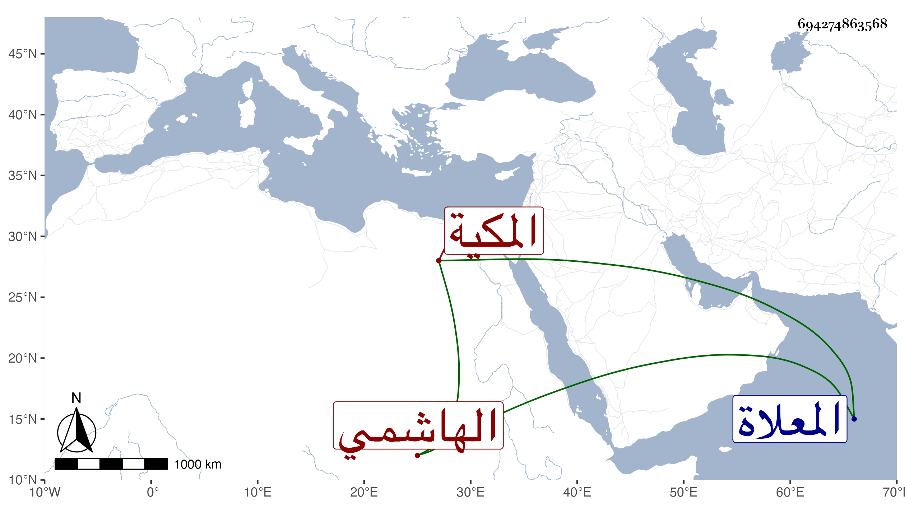

0902Sakhawi.DawLamic.ITO20230111-ara1.EIS1600.694274863568
Biography ID: 694274863568
934
أم كلثوم ابنة عطية بن محمد بن أبي الخير محمد بن فهد الهاشمي المكية ست الأهل عائشة . ولدت في شوال سنة ثلاث وثلاثين وثمانمائة وأحضرت في الرابعة على محمد بن علي الزمزمي ، وأجاز لها القبابي والتدمري والواسطي والزركشي والبدر البوصيري وابن الطحان وابن ناظر الصاحبة والعلاء بن بردس والبرهان الحلبي وعائشة الكنانية والشرائحية وآخرون ، وتزوجها بكرا أبو البركات بن أبي البقاء بن الضياء واستولدها واحدة بعد أخرى ثم بعده على بن عبد الغني الغزولي وطلقها وتأيمت بعده حتى ماتت في ليلة الجمعة سابع عشري صفر سنة تسع وتسعين وصلى عليها عقب صلاة صبح الجمعة ثم دفنت عند قبورهم من المعلاة .
